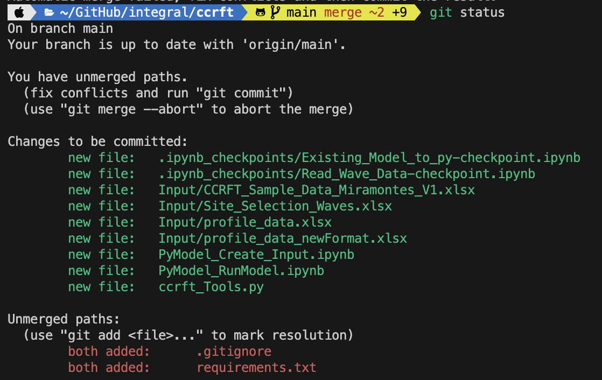

| Command | Detail |
|---|---|
| sudo -s postgres psql | Connect to PostgreSQL as admin |
| postgres=# \l | List all databases |
| postgres=# \c postgres | Connect to the database named postgres |
| postgres=# \q | Disconnect |
| postgres=# -d mydb | Connecting to database |
| postgres=# -U john mydb | Connecting as a specific user |
| postgres=# -h localhost -p 5432 mydb | Connecting to a host/port |
| postgres=# -U admin -h 192.168.1.5 -p 2506 -d mydb | Connect remote PostgreSQL |
| postgres=# -W mydb | Force password |
| postgres=# -c '\c postgres' -c '\dt' | Execute a SQL query or command |
| postgres=# -c “\l+” -H postgres > database.html | Generate HTML report |
| postgres=# -l | List all databases |
| postgres=# \dt | Show all tables in a database |
| postgres=# mydb -f file.sql | Execute commands from a file |
| postgres=# -V | Print the psql version |
| postgres=# \df <schema> | List functions in schema |
| postgres=# \du | Show current user permission |
| postgres=# \d <table> | Describe table |
| postgres=# \d+ <table> | Describe table with details |
| postgres=# \di | List indexes |
| postgres=# \du | List roles |
| postgres=# \ds | List sequences |
| postgres=# \copy … | Import/export table |
| postgres=# \echo [string] | Print string |
| postgres=# \i file | Execute file |
| postgres=# \o file | Export all results to file |
Tools
Development Tools
Utility Functions
Movie > Gif
ffmpeg -i file.mov -s 600x400 -pix_fmt rgb24 -r 20 -f gif - | gifsicle --optimize=3 --delay=3 > file.gif
Docker
Resources
Image vs. Container
Image - Application we want to run
Container - Instance of that image running as a process
Docker Basics
Create an Nginx container
docker run -p 80:80 -d --name webhost nginx
- Downloads Nginx from Docker Hub
- Starts new container from that image
- Opened port 80 on host IP
- Routes port 80 traffic to the container IP, port 80
- View container at http://localhost:80
Other examples
docker run -p 80:80 -d --name nginx nginx
docker run -p 8080:80 -d --name httpd httpd
docker run -p 3306:3306 --platform linux/amd64 -d --name mysql -e MYSQL_RANDOM_ROOT_PASSWORD=true mysql
Create a JupyterLab instance and attach your current directory as a volume: docker run -it --rm -p 8888:8888 -v $(PWD):/home/jovyan jupyter/pyspark-notebook
Processes and configurations
Check processes running inside a container: docker top <container>
Container configuration: docker <container> inspect
Check container stats (memory, cpu, network): docker stats <container>
Getting a shell inside containers
Start a new container interactively: docker run -it <container>
Run commands in existing container: docker exec -it <container>
Example: Start a container interactively and launch bash within it
- Start container and launch bash:
docker run -it --name ubuntu ubuntu bash - Run some bash command:
apt-get install -y curl - Exit the container:
exit - Start and re-enter the container:
docker start -ai ubuntu
Example: Launch shell in running container
docker exec -it <container> bash
Pull an image from docker hub
docker pull <imagename>
Docker Networks
- Each container is connected to a private virtual network (called “bridge”).
- Each virtual network routes through NAT firewall on host IP.
- All containers on a virtual network can talk to each other without
-p - Best practice: Create a new virtual network for each app.
- You can skip virtual networks and use the host IP (
--net=host).
Get container IP: docker inspect --format '{{ .NetworkSettings.IPAddress }}' <container>
Publishing (#:#)
example: 8080:80
left number: published/host port
right number: listening/container port
Traffic passing through port 8080 on the HOST will be directed to port 80 on the container.
DNS
Docker uses container names as host names.
Dont rely on IPs for inter-communication.
Best Practice Always use custom networks.
Assignment
Check different curl versions within current versions of Ubuntu and CentOS.
Run “curl –version” on both operating systems.
Steps
ubuntu: apt-get update && apt-get install curl
centos: yum update curl
Then…
curl --version
Also:
Check out command docker --rm
Dockerfiles
Recipe for creating images
Each Dockerfile stanza such as “RUN”, “CMD”, etc. are stored as a single image layer. Docker caches each layer by giving it a unique SHA (hash), so whenever the image is (re)built, it can check to see if a layer has changed, and if not, it will use the cached layer.
Docker builds images top down, so it is best practice to structure the Dockerfile in such a way that lines which will change the most are at the bottom, and lines that will change the least are at the top. If a line is changed (ie. source code changes) Docker will rebuild that line, and thus each line after that will also need to be rebuilt.
Keeping the Docker system clean
docker system prune - all stopped containers - all networks not used by at least one container - all dangling images - all dangling build cache
Volumes an Bind Mounts
Volumes - Special location outside of container UFS
Bind Mounts - Link container path to host path
Build an image and named volume (persistent): docker run -d --name mysql -e MYSQL_ALLOW_EMPTY_PASSWORD=True -v mysql:/var/lib/mysql --platform linux/amd64 mysql
Git
- https://product.hubspot.com/blog/git-and-github-tutorial-for-beginners
- https://docs.gitlab.com/ee/gitlab-basics/start-using-git.html
Initialize
- Launch Git Bash
- Navigate to project directory
- initialize git repository in the folder root:
git init - create new file in directory:
touch filename.extension - list files in root:
ls - check which files git recognizes:
git status
Staging
A commit is a record of what files you have changed since the last time you made a commit. Essentially, you make changes to your repo (for example, adding a file or modifying one) and then tell git to put those files into a commit. Commits make up the essence of your project and allow you to go back to the state of a project at any point.
So, how do you tell git which files to put into a commit? This is where the staging environment or index come in. When you make changes to your repo, git notices that a file has changed but won’t do anything with it (like adding it in a commit).
To add a file to a commit, you first need to add it to the staging environment. To do this, you can use the git add <filename> command.
Once you’ve used the git add command to add all the files you want to the staging environment, you can then tell git to package them into a commit using the git commit command. Note: The staging environment, also called ‘staging’, is the new preferred term for this, but you can also see it referred to as the ‘index’.
- Add files to the staging environment:
git add filename.extension - Check staging environment for new files:
git status
Commit Locally
git commit -m "Your message about the commit"
Branches
Say you want to make a new feature but are worried about making changes to the main project while developing the feature. This is where git branches come in.
Branches allow you to move back and forth between ‘states’ of a project. For instance, if you want to add a new page to your website you can create a new branch just for that page without affecting the main part of the project. Once you’re done with the page, you can merge your changes from your branch into the master branch. When you create a new branch, Git keeps track of which commit your branch ‘branched’ off of, so it knows the history behind all the files.
git checkout -b <my branch name>- Show list of branches:
git branch
Commit to Github
- Create new repo on GitHub
git remote add origin <url produced on github for new repo>git push -u origin [master/main]
Push a Branch to Github
git push origin <my-new-branch>
You might be wondering what that “origin” word means in the command above. What happens is that when you clone a remote repository to your local machine, git creates an alias for you. In nearly all cases this alias is called “origin.” It’s essentially shorthand for the remote repository’s URL. So, to push your changes to the remote repository, you could’ve used either the command: git push git@github.com:git/git.git yourbranchname or git push origin yourbranchname
Pull Request
A pull request (or PR) is a way to alert a repo’s owners that you want to make some changes to their code. It allows them to review the code and make sure it looks good before putting your changes on the master branch.
Get Changes on Github
git pull origin master
check all new commits: git log
View Differences
- run:
git diff
Remove a Branch
Locally
git branch -d <branch_name>
Remote
git push <remote_name> --delete <branch_name>
Remove tracked file/directory
File
git rm --cached <file>
Directory
git rm --cahced -r dir/
pre-commit
Please make sure to install our pre-commit hooks into your Git workflow. Pre-commit will help keep our code clean and make sure we are following best practices.
- Install pre-commit hooks:
python -m pre_commit install --install-hooks - Run hooks on the entire codebase:
python -m pre_commit run --all-files
Hooks will run on the current commit snapshot when executing a git commit. Pre-commit hooks allow us to check for potential issues and make sure we are applying standards to our code before pushing to GitHub.
See an example .pre-commit-config.yml
Merge
The steps below can be used to merge two branches on your local machine. The braches used in this example are:
main: The authoritative or “production” code lives in this branch.dev: This branch is split from themainbranch and a new feature or update is coded with the intent to merge changes back into themainbranch.
Pull
mainanddevbranches so local repo is up to date with the remote.git checkout maingit pull origin maingit checkout devgit pull origin dev
Checkout the main branch so we can merge the
devbranch intomaingit checkout maingit merge dev
Check the branch status:
git statusEvaluate the two files with a conflict (ie.
.gitignoreandrequirements.txt) and reconcile issues, thengit addwhen ready.Commit the changes:
git commit -m "merge @tnelson-integral dev branch with main"Push changes to the remote on GitHub:
git push origin mainCheck out the
devbranch locally and pull themainbranch changes into it sodevcan be up-to-date withmaingit checkout devgit pull origin maingit push origin dev
psql
Export table to CSV
\copy table TO '<path>' CSV\copy table(col1,col1) TO '<path>' CSV\copy (SELECT...) TO '<path>' CSV
Backup
Use pg_dumpall to backup all databases
$ pg_dumpall -U postgres > all.sql
Use pg_dump to backup a database
$ pg_dump -d mydb -f mydb_backup.sql
-aDump only the data, not the schema-sDump only the schema, no data-cDrop database before recreating-CCreate database before restoring-tDump the named table(s) only-FFormat (c: custom,d: directory,t: tar)
Use pg_dump -? to get the full list of options
Restore
$ psql -U user mydb < mydb_backup.sql
pg_restore
$ pg_restore -d mydb mydb_backup.sql -c
-U Specify a database user-c Drop database before recreating-C Create database before restoring-e Exit if an error has encountered-F Format (c: custom, d: directory, t: tar, p: plain text sql(default))
Use pg_restore -? to get the full list of options